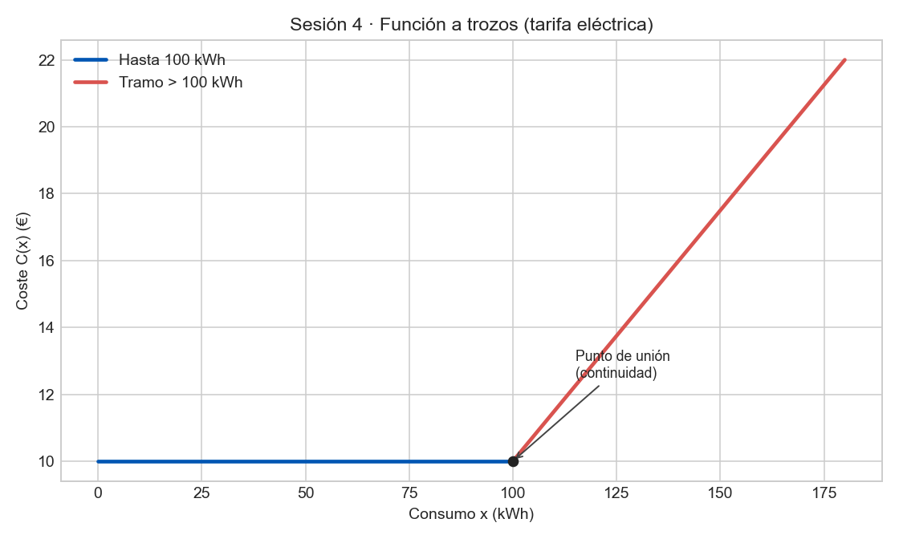

Ejercicio 1 (Modelado)
Tarifa eléctrica: 10€ fijos hasta 100 kWh; si se supera, cada kWh extra cuesta 0,15€.
\[ C(x)=\begin{cases} 10, & 0\le x\le 100\\ 10+0{,}15(x-100), & x>100 \end{cases} \] Es continua en \(x=100\) porque ambas expresiones valen 10.
Ejercicio 2 (Práctica)
Representa \(f(x)=\begin{cases}x+2,&x<0\\x^2,&x\ge0\end{cases}\).
Para \(x<0\): recta de pendiente 1 con límite izquierdo \(2\) en 0. Para \(x\ge0\): parábola con \(f(0)=0\). Hay salto en \(x=0\).
Ejercicio 3 (Práctica)
Halla \(k\) para continuidad en \(x=2\): \(g(x)=\begin{cases}kx-1,&x\le2\\2x+3,&x>2\end{cases}\).
\(2k-1=2\cdot2+3=7\Rightarrow2k=8\Rightarrow k=4\).
Ejercicio 4 (Práctica)
Mensajería: 5€ hasta 2kg; para más peso, 5€ + 2€ por kg adicional. Calcula coste para 5kg.
\[ f(x)=\begin{cases} 5, & 0<x\le2\\ 5+2(x-2), & x>2 \end{cases} \] \(f(5)=5+2(3)=11€\).
f(x)=If[x<0, x+2, x^2]C(x)=If[x<=100, 10, 10+0.15*(x-100)]M(x)=If[x<=2, 5, 5+2*(x-2)]g(x)=If[x<=2, k*x-1, 2*x+3] y mover k con deslizador.